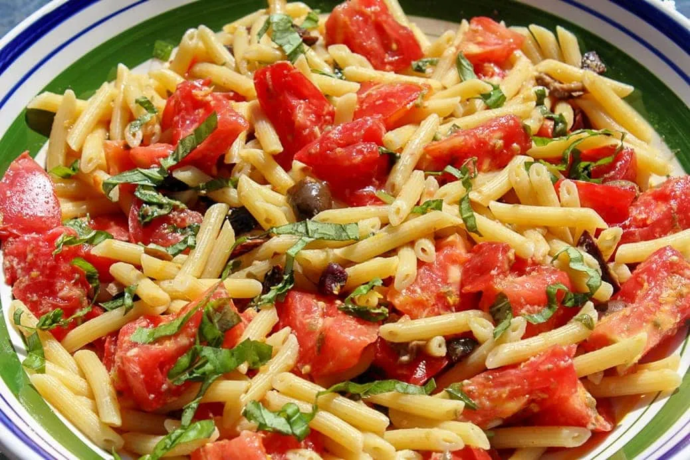

Back
Fresh Tomato Pasta

This is an extremely simple pasta recipe that I love to make when I don't really feel like cooking! I use
rigatoni, but you can use whatever pasta you prefer. This is especially delicious with tomatoes fresh from your
garden. Serve with garlic bread and a simple lettuce salad with Italian dressing.
Ingredients
- 1 (8 ounce) package dry pasta
- 1 clove garlic
- 1 medium tomato
- 1 teaspoon dried basil
- 1 tablespoon olive oil
- 1 pinch salt
Steps:
- Fill a large pot with lightly salted water and bring to a rolling boil over high heat.
- Coarsely chop the tomato and transfer to a small bowl. Sprinkle the tomato chunks with basil, olive oil,
and salt. Set aside.
- Once the water is boiling, stir in the rigatoni, and return to a boil. Cook the pasta uncovered,
stirring occasionally, until the pasta has cooked through, but is still firm to the bite, about 12
minutes. Drain well in a colander, and then return the pasta to the pot.
- Pour the tomato mixture over the pasta and toss to mix.